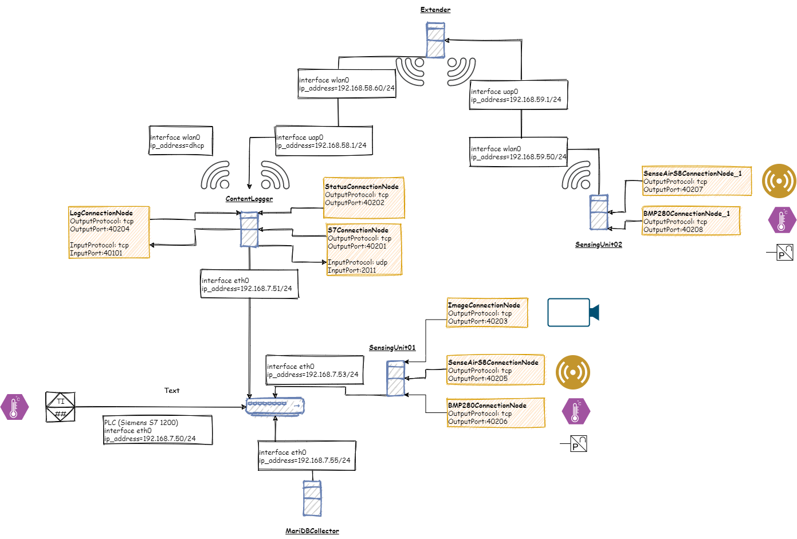

The content logging solution is an example of how an open information model of things can be utilized in realizing a concrete solution.
The example solution has been made using Raspberry Pi computers, but it also works on other types of computers. The basic idea is to collect versatile data from various sources such as:
The solution consists of several independent programs, all of them are utilizing the information model of things. The most central program is ContentLogger, which collects data from several different sources and stores the data in the MariaDb database or the RaakeDb database. RaakeDb is a program module that is part of the solution, it stores raw data on a USB stick, for example. The content to be storedis dynamic data and presentation of data requires the utilization of IMoT. Thanks to this, the interfaces of the solution are simple, the amount of data to be transferred is small and the program modules are simple.
